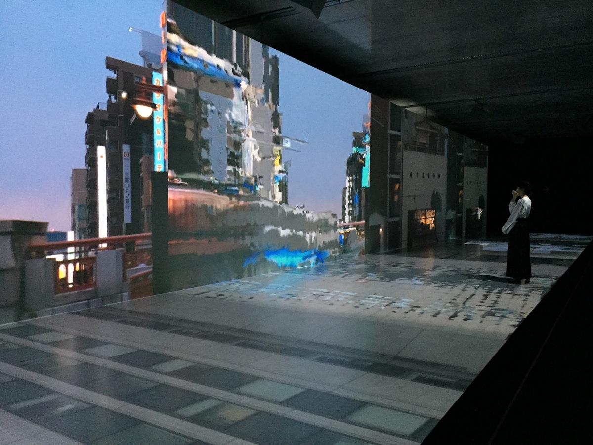
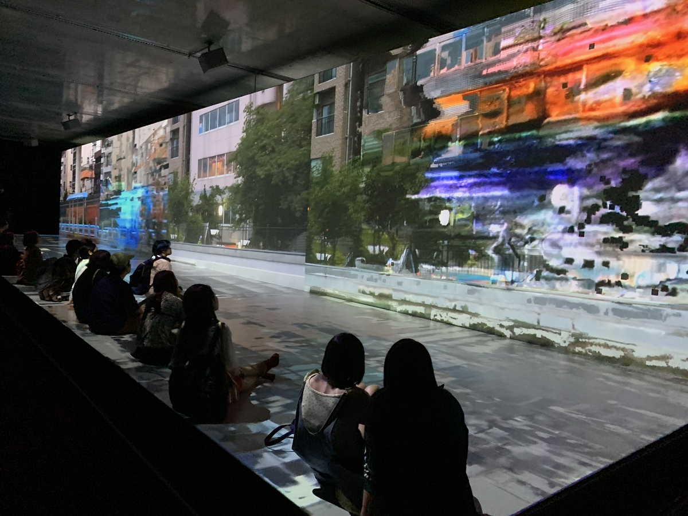
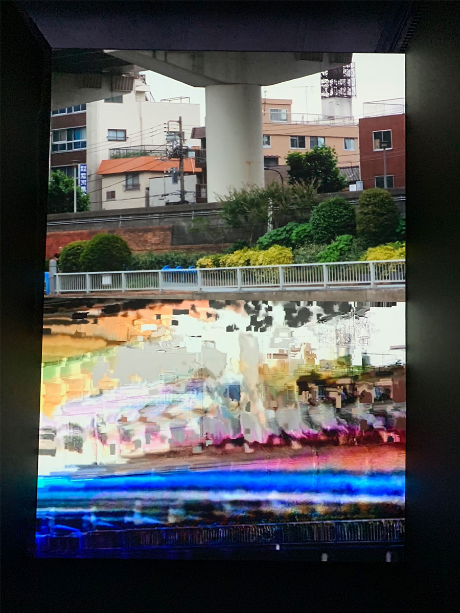
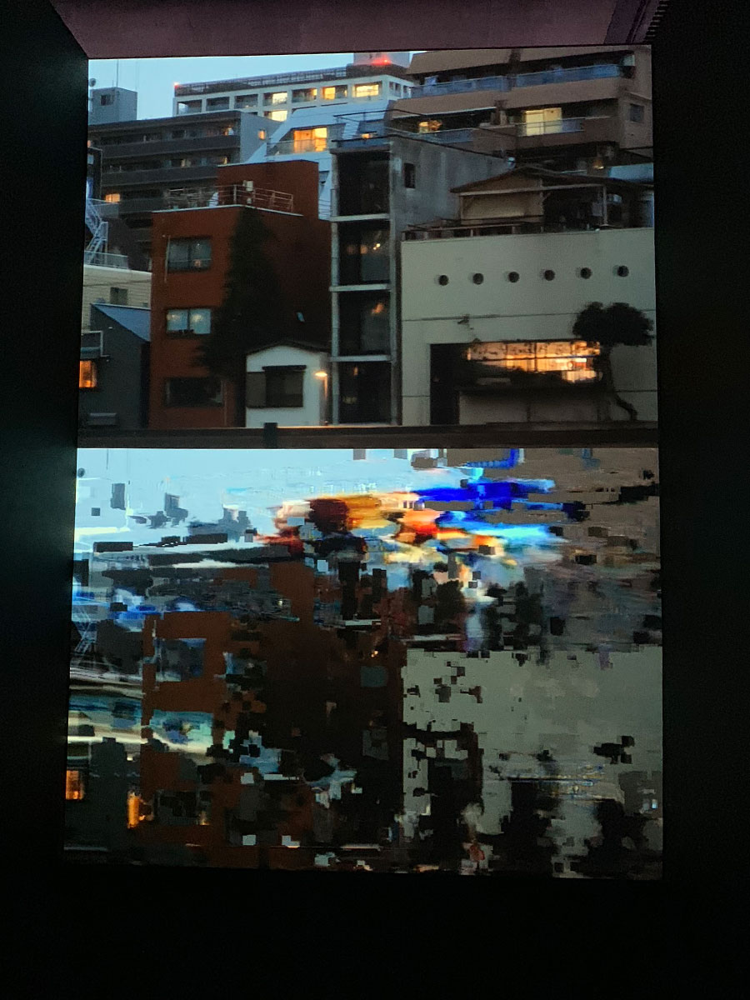
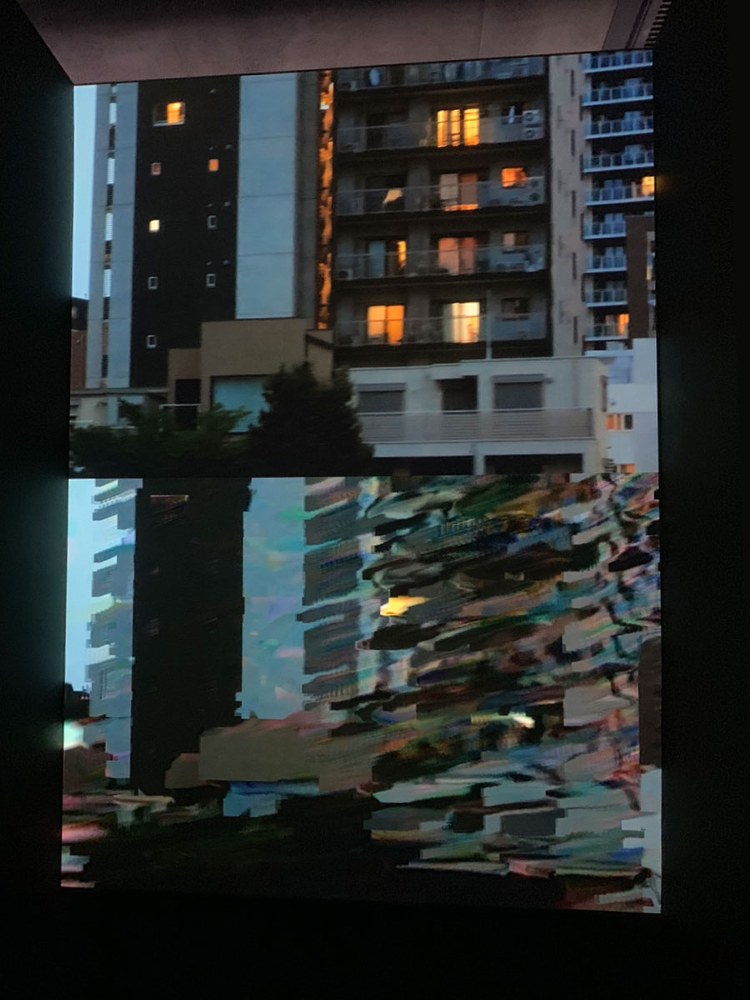
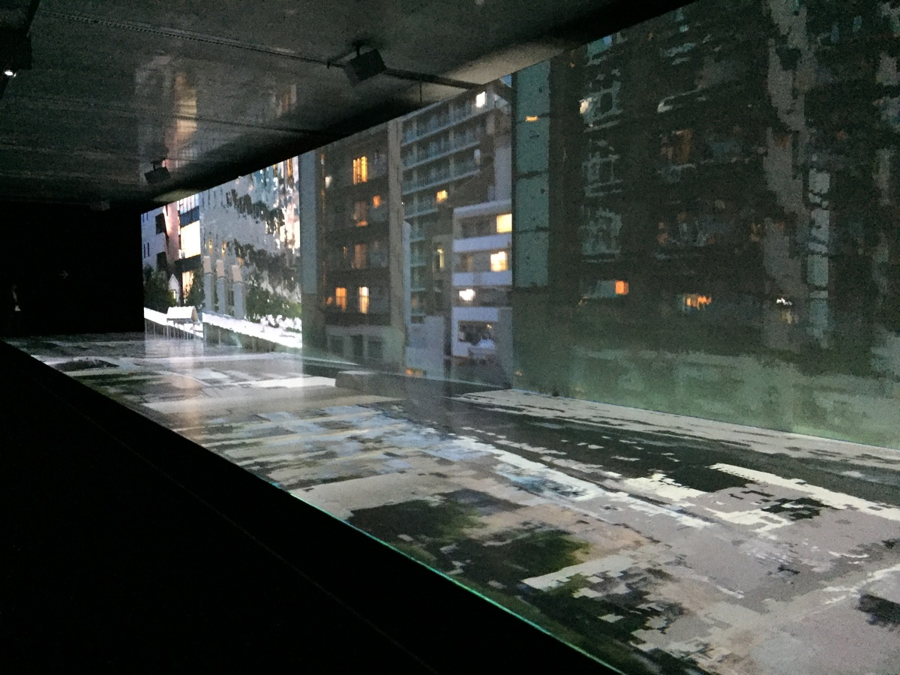

The group show "Audio Architecture" was held in mid 2018 at 21_21 Design Sight.
Nine artists showed visuals made for Cornelius's new track which was playing back loopy in the exhibition space.
It was curated by Yugo Nakamura.
http://www.2121designsight.jp/en/program/audio_architecture/
UCNV take a part with his new method for glitch works to juxtapose normal and glitched pieces.
    